V-Shift 使い方説明書
Visiting Care Shift Manager - 訪問介護シフト管理アプリケーション
目次
1. インストール手順
- ダウンロード & 解凍：ダウンロードサイトからファイルを保存し、右クリックで解凍してください。
※フォルダ内のファイルは移動・削除しないでください（正常に動作しなくなります）。 - フォルダの移動：安定してご利用いただくため、解凍したフォルダごと「C:¥Program Files」へ移動することを強くお勧めします。
- ショートカット作成：フォルダ内の「V-Shift.exe」を右クリックし、「ショートカットの作成」を選択してデスクトップ等に配置してください。次からはそのショートカットから起動できます。
注意事項：
- 初回起動時、Windowsのセキュリティ警告（SmartScreen）が表示される場合がありますが、問題ありません。「詳細情報」をクリックし、「実行」を選択してください。
- 本ソフトはレジストリを使用しないため、解凍したフォルダをそのまま使用できます。
2. アンインストール手順
本ソフトは「プログラムの追加と削除」には表示されません。以下の手順で削除可能です。
- V-Shiftを終了します。
- 配置した「V-Shift」フォルダ（C:¥Program Files内のもの等）をフォルダごと削除します。
- 作成したデスクトップのショートカットを削除します。
※設定やログを完全に消去したい場合は、%AppData%\V-Shift フォルダもあわせて削除してください。
3. ホーム画面
3.1 ホームタブ
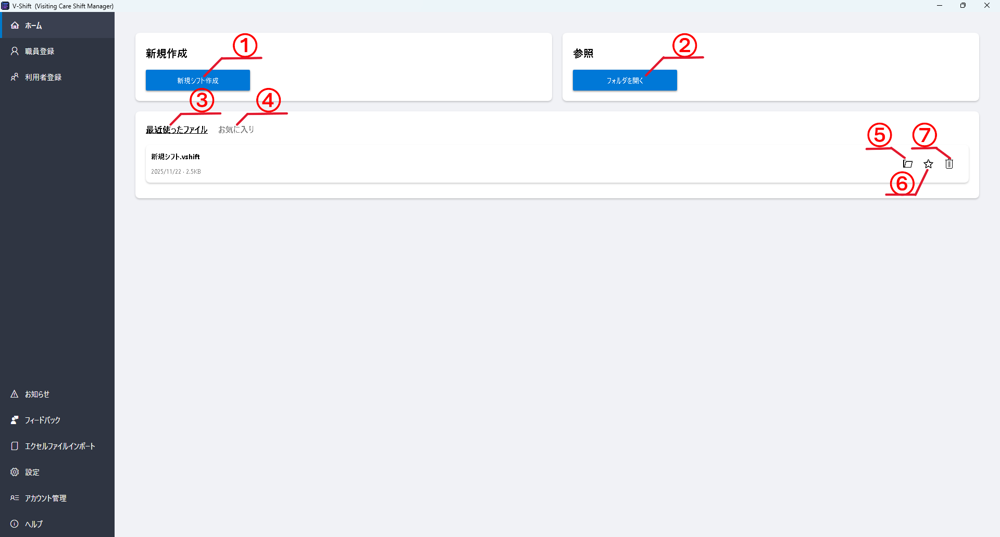
-
1
新規シフト作成
新しいシフトファイルを作成します。ファイル名と保存場所を設定可能です。
-
2
フォルダを開く
フォルダを選択してファイルを開きます。
-
3
最近使ったファイルタブ
最近開いたファイルの一覧を表示します。
-
4
お気に入りファイルタブ
お気に入りに登録したファイルの一覧を表示します。
-
5
ファイルの場所をエクスプローラで開く
ファイルの保存場所をエクスプローラーで開きます。
-
6
お気に入り登録
ファイルをお気に入りに登録・解除します。
-
7
削除
ファイルを最近使ったファイルの一覧から削除します。
3.2 職員登録タブ
職員を登録可能です。
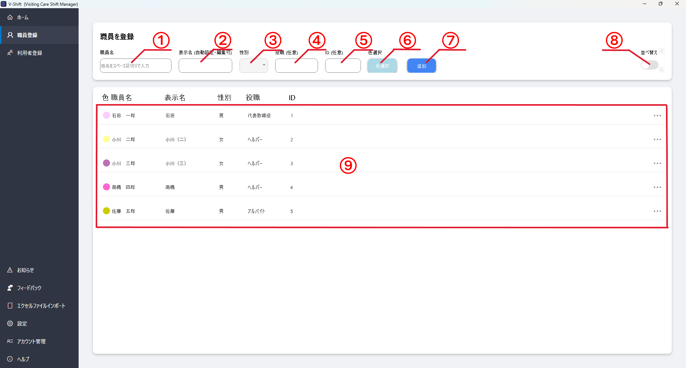
-
1
職員名入力欄
職員のフルネームを入力します。
-
2
表示名入力欄（自動入力）
表示名を入力します。職員名から自動設定されますが、編集可能です。シフト編集画面では、同姓同名の職員を見分けるために表示名が使用されます。
-
3
性別選択
性別を選択します（男・女・カスタム）。
-
4
役職入力欄（任意）
役職を入力します（任意）。
-
5
ID入力欄（任意）
職員IDを入力します（任意）。
-
6
色選択
職員の表示色を選択します。シフト編集画面で職員ごとに色分け表示する際に使用されます。
-
7
追加
入力した職員情報を登録します。
-
8
並び替え切り替え
ONにすると、職員リストをドラッグ&ドロップで並べ替えできます。
-
9
職員リスト
登録済みの職員一覧を表示します。各要素の編集、削除が右側の３点メニューからできます。
3.3 利用者登録タブ
利用者を登録可能です。
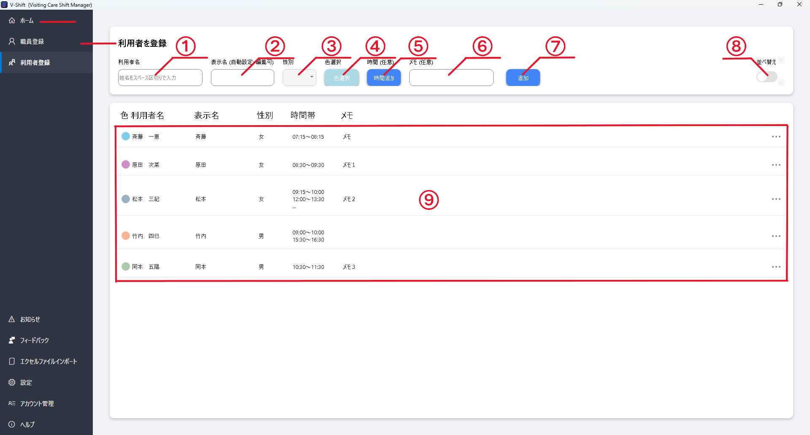
-
1
利用者名入力欄
利用者のフルネームを入力します。
-
2
表示名入力欄（自動入力）
表示名を入力します。利用者名から自動設定されますが、編集可能です。シフト編集画面では、同姓同名の利用者を見分けるために表示名が使用されます。
-
3
性別選択
性別を選択します（男・女・カスタム）。
-
4
色選択
利用者の表示色を選択します。シフト編集画面で利用者ごとに色分け表示する際に使用されます。
-
5
時間帯追加
利用者ごとによく使う時間帯を登録できます。シフトに入る時間がパターン化されている場合、ここに設定しておくことでシフト編集画面で素早く時間帯を設定できます（任意）。
-
6
メモ入力欄（任意）
メモを入力します（任意）。
-
7
追加
入力した利用者情報を登録します。
-
8
並び替え
ONにすると、利用者リストをドラッグ&ドロップで並べ替えできます。
-
9
利用者リスト
登録済みの利用者一覧を表示します。各要素の編集、削除が右側の３点メニューからできます。
3.4 お知らせタブ
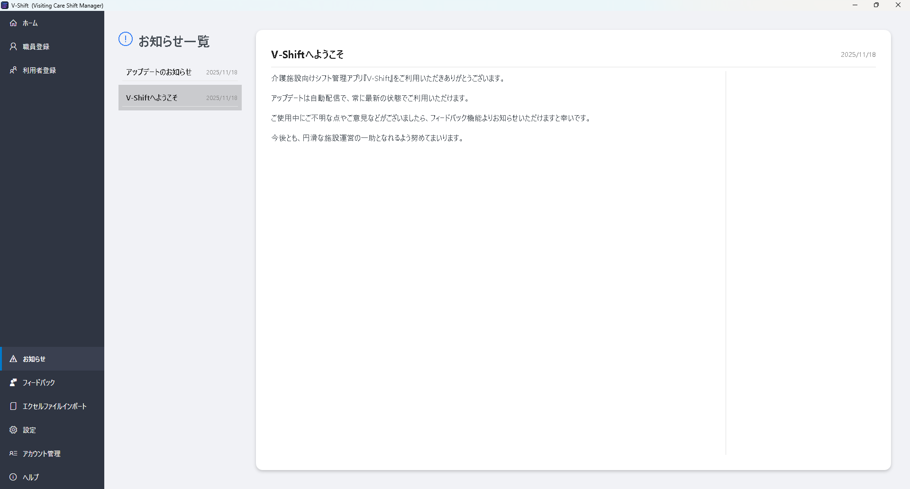
過去のお知らせ情報を一覧で確認可能です。
3.5 フィードバックタブ
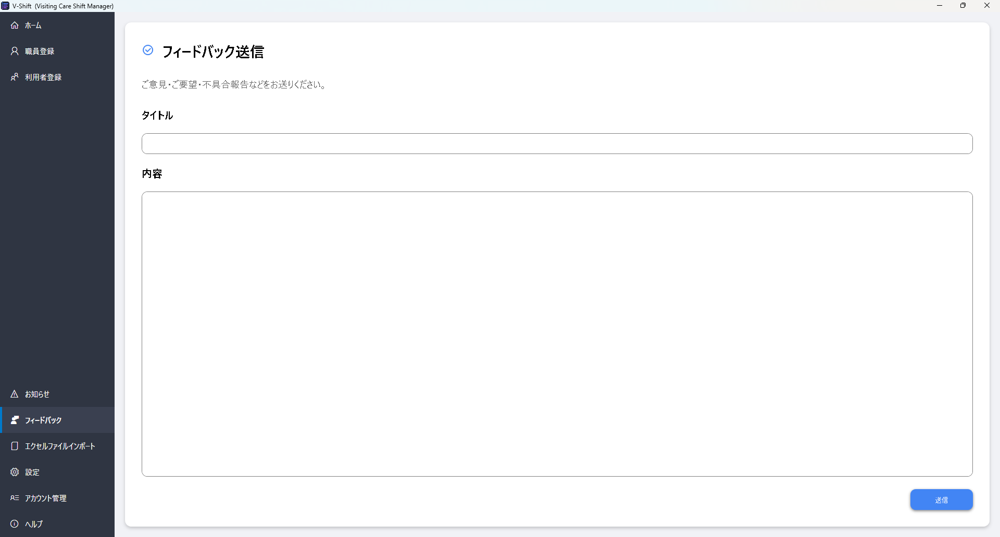
フィードバックフォームが表示され、要望や不具合報告を送信可能です。
3.6 エクセルファイルインポートタブ
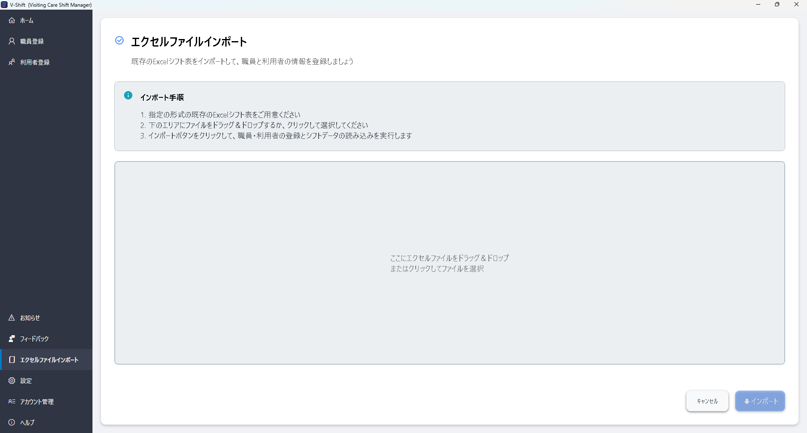
エクセルファイルから職員、利用者情報をインポート可能です。
- インポートするエクセルファイルを選択
- インポートボタンを押すとインポート実行
3.7 設定タブ
シフト編集画面、シフト出力画面の各設定項目のデフォルト値の設定が可能です。
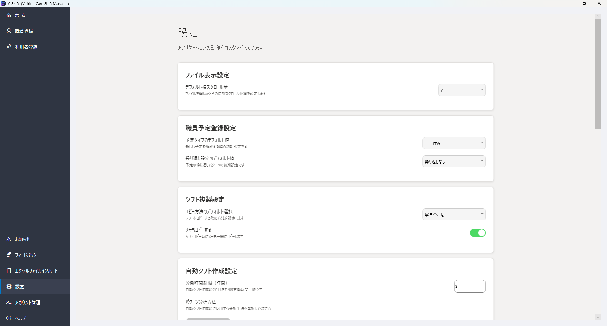
シフト編集画面と出力画面の各要素のデフォルト値を決定可能です。主な設定項目は以下の通りです：
- デフォルト横スクロール量
- 予定タイプのデフォルト値
- 繰り返し設定のデフォルト値
- コピー方法のデフォルト選択
- メモコピー選択
- 労働時間制限（時間）
- パターン分析方法
- 時刻表示
- 利用者・職員表示切替
- 月・日表示切替
- 時系列表示切替
- タイムライン拡大率スライダー
- 出力切り替え選択
- 出力範囲選択
3.8 アカウント管理タブ
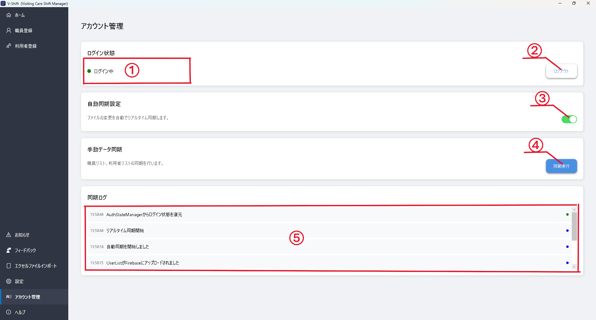
-
1
ログイン状態
現在のログイン状態とユーザー情報を表示します。
-
2
ログアウト
ログアウトします。
-
3
自動同期のON,OFF
ファイルの変更を自動でリアルタイム同期するかを設定します。
-
4
手動同期
職員リスト、利用者リストの同期を手動で実行します。
-
5
同期ログの確認
同期の実行履歴を表示します。
3.9 ヘルプタブ

アプリケーション内で使い方説明書を閲覧できます。各画面の操作方法や機能の詳細について確認可能です。
目次をクリックすると目的のページの説明まで移動できます。
4. シフト編集画面
4.1 シフト編集エリアの基本操作
ショートカットキー
-
Shift + スクロール
横スクロール
-
Ctrl + スクロール
タイムラインの拡大・縮小（日表示モード時のみ）
-
Ctrl + ドラッグ＆ドロップ
シフトのドラッグ移動（日表示モード時のみ）
-
Ctrl + C
選択中のシフトのコピー
-
Ctrl + X
選択中のシフトの切り取り
-
Ctrl + V
選択中のシフトのペースト
マウス操作（日表示モード）
-
左クリック
シフトバー選択
-
右クリック
シフト編集メニュー表示
-
タイムライン上でドラッグ
選択範囲にシフト新規作成
マウス操作（月表示モード）
-
左クリック
セル選択
-
右クリック
シフト編集メニュー表示
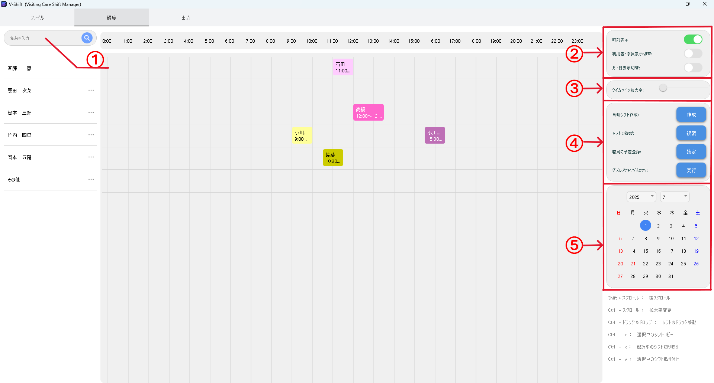
-
1
検索ボックス
左上検索欄から、職員の表示名または登録名でシフトと行の検索が可能です。
-
2
表示モード切替エリア
時刻表示切替：各シフトの時刻表示の有無を切り替え
利用者、職員表示切替：利用者シフトと職員シフトの表示切替
月、日表示切替：シフトの表示モードを月表示と日表示で切り替え
時系列表示切り替え：シフトの表示を、"登録された時間帯とその他の時間帯別"と"時系列順"で切り替え -
3
拡大率変更（日表示モード時のみ有効）
スライダーを移動させ、拡大率を1,2,4倍に変更可能です。月表示モード時は非表示になります。
-
4
各種機能へのアクセスボタンエリア
自動シフト作成：過去データからシフトのパターンを抽出し、指定範囲のシフトを生成
シフトの複製：日付単位での指定範囲から指定範囲への範囲コピーを実行
職員予定登録：職員の休み予定を登録
ダブルブッキングチェック：ファイル内のすべてのシフトのダブルブッキングをチェック -
5
日付選択エリア
カレンダーから日付を選択し、その日付にジャンプ可能です。
予約編集ダイアログ

シフトをクリックまたはダブルクリックすると、予約編集ダイアログが表示されます。
-
職員名/利用者名
シフトに割り当てる職員または利用者を選択します。
-
時間帯
時間帯を選択します。カスタム時間帯を選択した場合は、開始時刻と終了時刻を設定します。
-
色
シフトの表示色を選択します。
-
メモ
メモを入力します。
-
削除
シフトを削除します（編集時のみ表示）。
※時間は5分単位で設定されます。
2.2 自動シフト作成ダイアログ
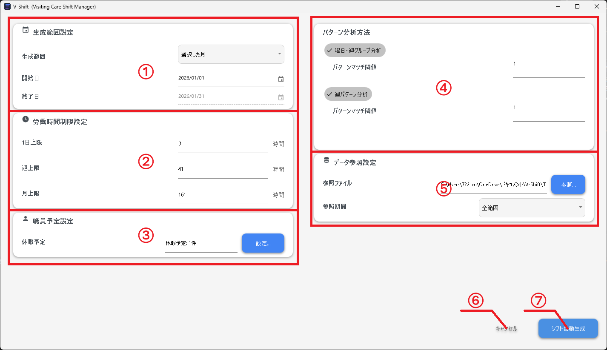
-
1
生成範囲
シフトを生成する範囲を選択します。
-
2
労働時間上限設定
一人あたりの労働時間上限を設定します。
-
3
職員休暇予定
職員の休暇設定画面を開きます。休暇予定を設定した職員は、シフト自動生成時に考慮されます。
-
4
パターン分析方法選択
分析に使用するパターン分析方法を選択します。複数選択可能です。 各パターンは、閾値が変更可能です。閾値は０以上の整数で指定可能で、数値が大きいほど生成量が多くなります。
-
5
参照ファイル
新規ファイル作成時、過去データがない場合にほかのシフトファイルを参照するときに使用します。
参照するファイルを選択し、参照期間を設定します。 -
6
キャンセル
ダイアログを閉じます。
-
7
シフト自動生成
設定に基づいてシフト自動生成を実行し、プレビューを表示します。分析パターンが1つ以上選択されている場合のみ有効です。
2.2.1 自動シフト作成結果プレビュー
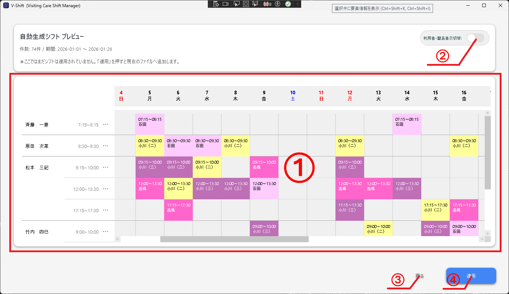
-
1
プレビューエリア
生成された自動シフトをプレビューします。
-
2
利用者・職員表示切替
利用者シフトと職員シフトの表示切替が可能です。
-
3
戻るボタン
自動シフト作成設定画面に戻ります。
-
4
適用ボタン
生成範囲のシフトがプレビューに表示されているシフトで上書き保存されます。この変更は元に戻せません。
4.3 シフト複製ダイアログ
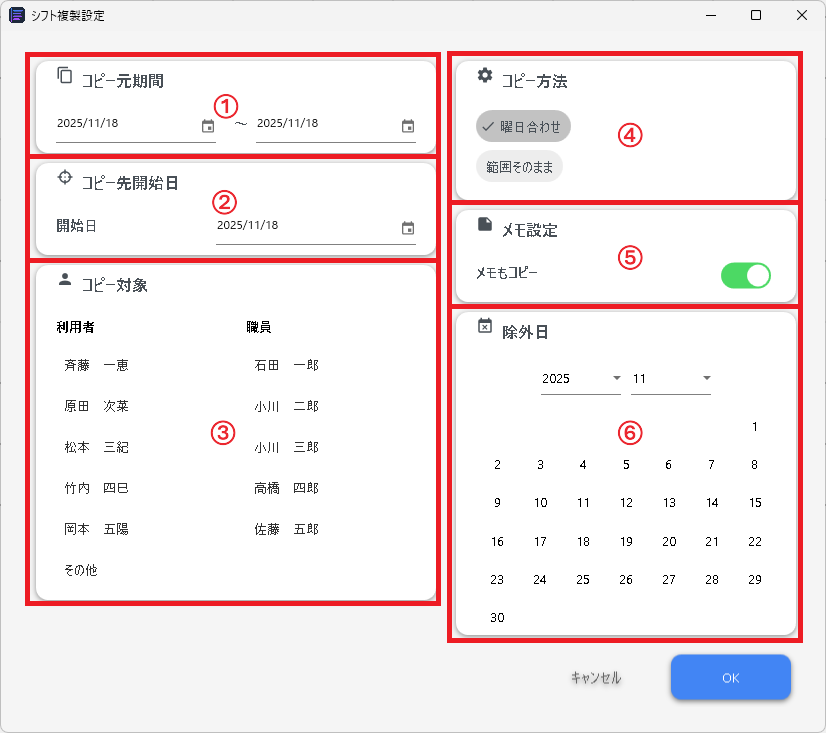
-
1
コピー元範囲
コピーするシフトの開始日と終了日を選択します。
-
2
コピー先開始日
コピー先の開始日を選択します。
-
3
コピー対象
利用者、職員から、選択した人のみ複製します。何も選択しなければすべてコピーします。
-
4
コピー方法
コピー先で、コピー元と曜日を合わせて貼り付けるか開始日からそのまま貼り付けるか選択します。
-
5
メモ
各シフトに追加されているメモもコピーするか選択します。
-
6
除外日
コピー元範囲内で、コピー先に反映させたくない日を指定可能です。
4.4 職員の予定登録ダイアログ
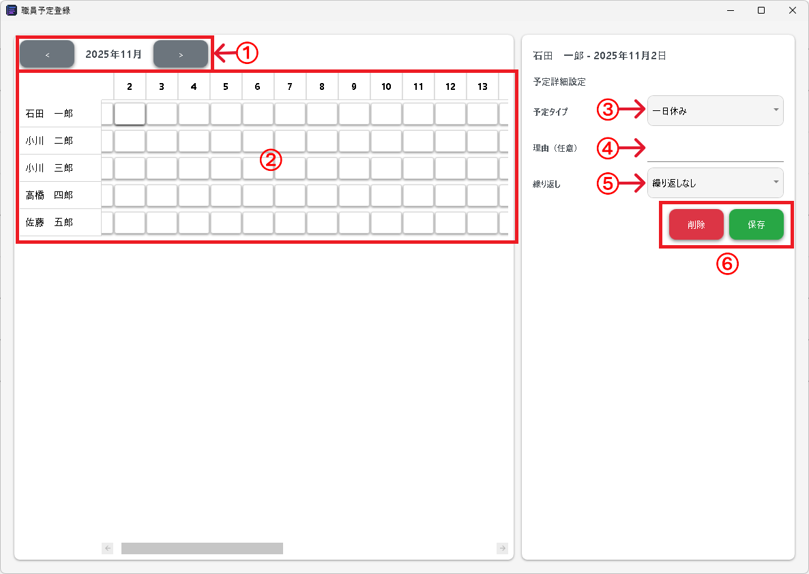
-
1
前月ボタン・次月ボタン
表示月を変更します。
-
2
スケジュールグリッド
職員×日付のマス目を表示します。各マスをクリックすると、その職員のその日の予定を編集できます。
-
3
予定タイプ選択
予定のタイプを選択します（一日休み・午前半休・午後半休・カスタム時間帯）。
-
4
理由入力テキストボックス
予定の理由を入力します（任意）。
-
5
繰り返し設定
予定の繰り返しパターンを選択します（繰り返しなし・毎週同じ曜日・毎月同じ日・毎年同じ日）。
-
6
削除ボタン・保存ボタン
選択した予定を削除または保存します。
3. シフト出力画面
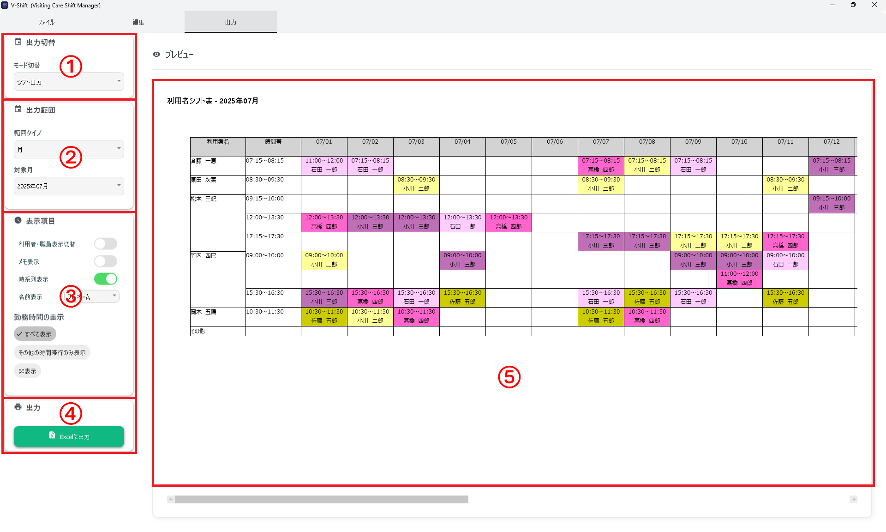
-
1
出力切り替え
シフト出力、勤務表出力の切り替えが可能です。
-
2
出力範囲
出力範囲の開始日、終了日の設定が可能です。
-
3
表の選択エリア（シフト出力モード時）
シフト表、職員の予定表の選択が可能です。
-
4
表示項目選択エリア
シフト出力モード時利用者、職員表示切替：利用者シフトと職員シフトの表示切替勤務表出力モード時
メモ表示切替：各シフトに追加されたメモの表示有無切替
タイムライン表示切替：タイムラインの表示有無切替（範囲が1日だけの場合のみ有効）
時系列表示切替：シフトの表示を、"登録された時間帯とその他の時間帯別"と"時系列順"で切り替え（利用者モードの時のみ有効）
名前表示：表示名を使用するか登録名を使用するか選択
勤務時間の表示：各シフトの勤務時間表示方法を選択名前表示：表示名を使用するか登録名を使用するか選択
時間帯別集計選択：選択した時間帯内での勤務時間の合計時間の列を追加。勤務時間帯設定を編集ボタンから、勤務時間帯名、開始時刻、終了時刻、曜日の編集、要素の追加、削除が可能 -
5
出力ボタン
エクセルファイルとして出力可能です。ボタンを押すと保存場所を選択可能です。
-
6
プレビューエリア
出力イメージのプレビューが表示されます。
6. トラブルシューティング
Q. ログインできません
A. 以下の点を確認してください。
- インターネットに接続されているか
- メールアドレス、パスワードが正しいか
- アカウント登録が完了しているか
Q. シフトを誤って削除してしまいました。復元できますか？
A. 現在のバージョンでは、シフトの復元機能は実装されていません。今後のアップデートでの実装を検討しています。
Q. 自動シフト作成で生成されたシフトを調整したいです。
A. 自動生成されたシフトは、通常のシフトと同様に編集・移動・削除が可能です。
Q. 複数のシフトファイルを同時に開けますか？
A. 現在のバージョンでは、1つのシフトファイルのみを開くことができます。別のファイルを開く場合は、現在のファイルを閉じてから新しいファイルを開いてください。
7. お問い合わせ先
V-Shiftに関するご質問、ご要望、不具合の報告などがございましたら、以下の方法でお問い合わせください。
- フィードバック機能：ホーム画面の「フィードバック」タブから、アプリケーション内で直接フィードバックを送信できます。
- メール：vshiftmanager@gmail.com
※お問い合わせの際は、問題が発生した画面や操作手順、エラーメッセージなどの情報を含めていただくと、より迅速に対応できます。